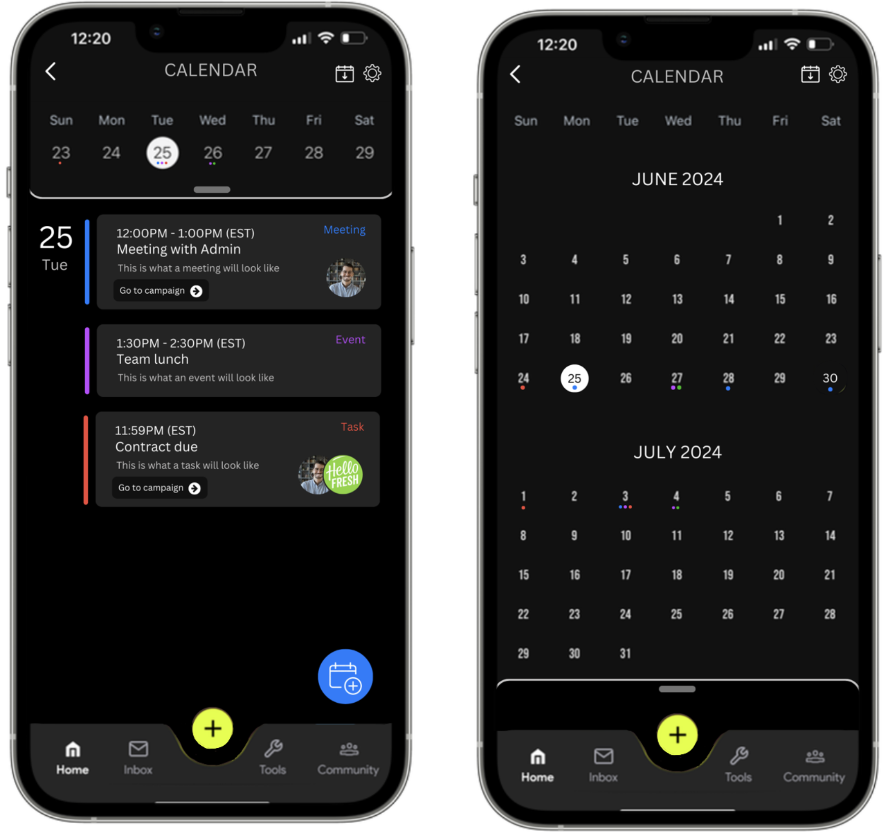

Calendar
Feature
Figma | User Research
The JABA app is a mobile platform that assists college athletes with NIL brand deals. In order to further this central goal, we looked to integrate a calendar feature within the app. This feature aims to increase user productivity and transparency.
I was selected by upper management to tackle this project. I loved being given complete creative control over my workflow and design process, completing the early research and design phases myself.
